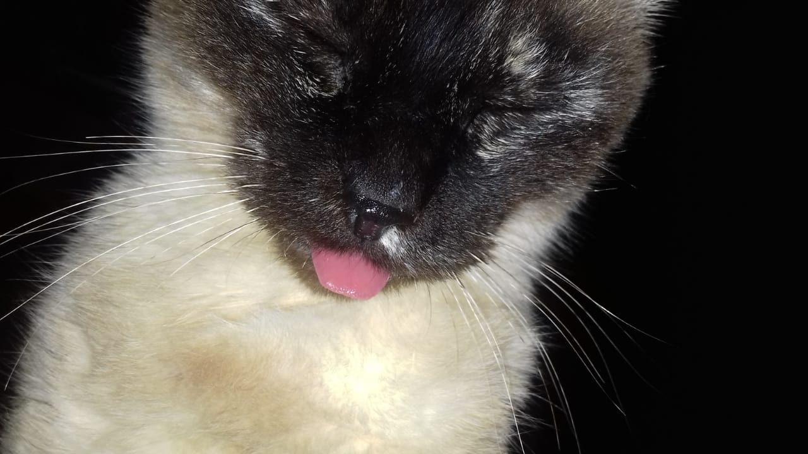

Esta es mi gata Miniña, fallecio en marzo de este año, fue una compañera de vida que estuvo conmigo por 16 años. Fue un apoyo tremendo cuando me sentia mal, ya que ella siempre se quedaba conmigo. Ultimamente la estoy extrañando mucho, por eso pongo su foto aca, para poder verla de nuevo mientras trabajo en esta página.
Esta cancion la he estado escuchando mucho ultimamente, me parece muy bonita y me tranquiliza, también la suelo escuchar cuando estoy triste.